Chiang Mai has more massage shops per square kilometer than almost anywhere on Earth. Walk down any soi in the Old City and you'll pass a dozen places with therapists beckoning from the doorway. The problem isn't finding a massage — it's finding a good one.
We combed through hundreds of Reddit posts from r/chiangmai, r/ThailandTourism, r/digitalnomad, and r/travel to find out which massage shops actual residents and repeat visitors swear by — and which ones are just tourist traps with aggressive touts. Spoiler: Reddit really loves the Women's Prison massage program.
📊 How we built this list
We analyzed 80+ Reddit posts and 400+ comments across r/chiangmai, r/ThailandTourism, r/digitalnomad, and r/travel — spanning 2022 to 2025. Massage shops were ranked by recommendation frequency and weighted by commenter credibility (long-term residents and repeat visitors vs. first-timers). We included the full spectrum — from ฿180 street-side sessions to luxury resort spas.
💰 ฿200–400/hour
📍 Multiple locations, Old City
💆 Thai, Oil, Foot, Herbal Compress
📌 Google Maps →
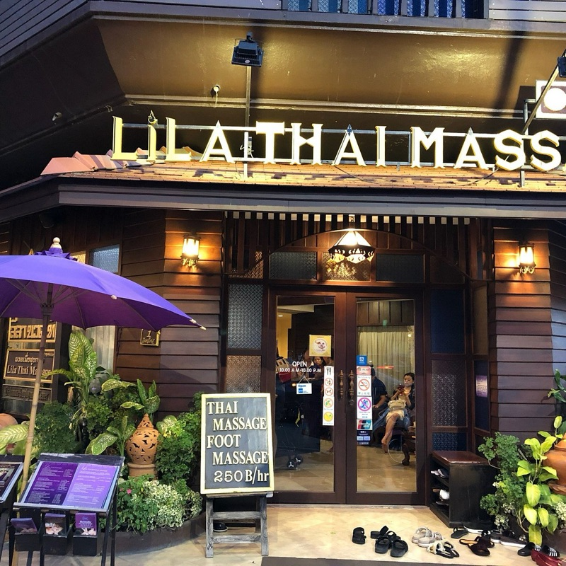
What to try: Traditional Thai massage (Nuad Thai) or herbal compress massage. Lila hires formerly incarcerated women and trains them in massage therapy — giving them skills and dignity after release. Multiple branches across the Old City, all consistently excellent. Book ahead in high season.
"For first time and foreigners, I always suggest Lila massage places. They hire ex women prisoners and help them get back on their feet. No pun intended. They cater to westerners."
— u/Importchef, r/chiangmai · 3 upvotes
tabiji verdict: The most-recommended massage in Chiang Mai across all of Reddit — and for good reason. Excellent technique, clean facilities, fair prices, and your money directly supports women rebuilding their lives. It's the feel-good pick in every sense. Multiple locations means you'll never be far from one.
💰 ฿200–300/hour
📍 Ratvithi Road, near Old City
💆 Thai, Foot, Oil
📌 Google Maps →

What to try: Traditional Thai massage. This is the actual prison vocational program (not to be confused with Lila, which hires post-release). Women currently in a low-security program learn massage as a job skill. The training is rigorous and the massages are outstanding.
"Best massage I had was at the place for female prisoners. Seriously. It's really nice and they are well trained."
— r/ThailandTourism · 14 upvotes
"Went based on this comment. It was the best massage of my life."
— r/ThailandTourism · follow-up reply
tabiji verdict: Chiang Mai's most uniquely famous massage experience. Sounds unconventional, but it's one of the highest-quality, lowest-cost massages you'll find anywhere. The women are thoroughly trained and take genuine pride in their work. Gets busy — arrive early or expect to wait. Cash only.
💰 ฿600–2,500/treatment
📍 Old City, Chiang Mai
💆 Thai, Tok Sen, Lanna Herbal, Oil, Packages
📌 Google Maps →
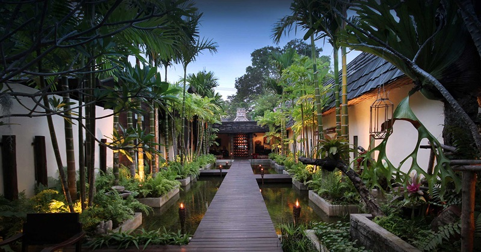
What to try: The Tok Sen (wooden mallet) massage or a Lanna herbal treatment package. Fah Lanna is set in a beautifully restored Lanna-style teak house with gardens, ponds, and that unmistakable northern Thai charm. It's the step-up from street-level without resort pricing.
"Fah Lanna is very nice, beautiful setting and good treatment packages."
— u/Excellent_Badger123, r/chiangmai · 4 upvotes
tabiji verdict: The "treat yourself" pick. When you want something more atmospheric than a shopfront but don't want to remortgage your house at Four Seasons. The Lanna architecture alone makes it feel special. Perfect for a date night or birthday treat. Book the afternoon slot and stroll the Old City temples after.
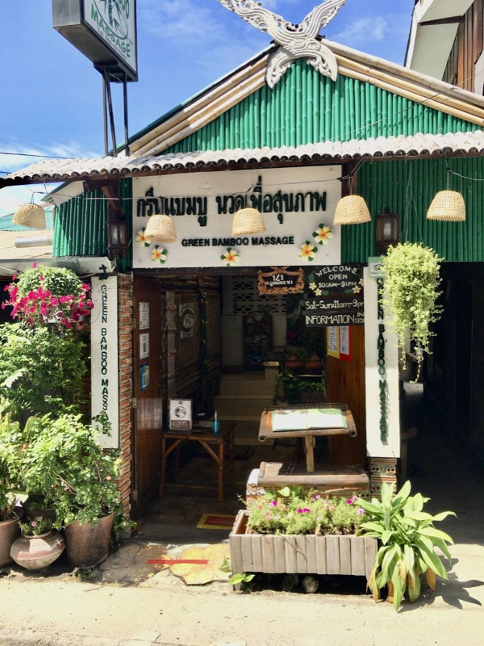
What to try: Traditional Thai massage. A no-frills Old City shop that punches well above its weight. Clean, professional, and the therapists actually know what they're doing — unlike many of the tourist-trap shops nearby. Exactly what you want from a neighborhood massage place.
"Green Bamboo Massage in old city. Best massage I've had in CM. Super professional too."
— u/elevatist, r/chiangmai · 3 upvotes
tabiji verdict: The kind of place expats keep quiet about. No Instagram-worthy interiors, no fancy menu — just genuinely skilled therapists at Old City prices. Walk in, get excellent work done on your tired muscles, walk out feeling reborn. The anti-tourist-trap.
💰 ฿500–1,500/treatment
📍 Old City, Chiang Mai
💆 Nuad Thai, Oil, Aromatherapy, Packages
📌 Google Maps →
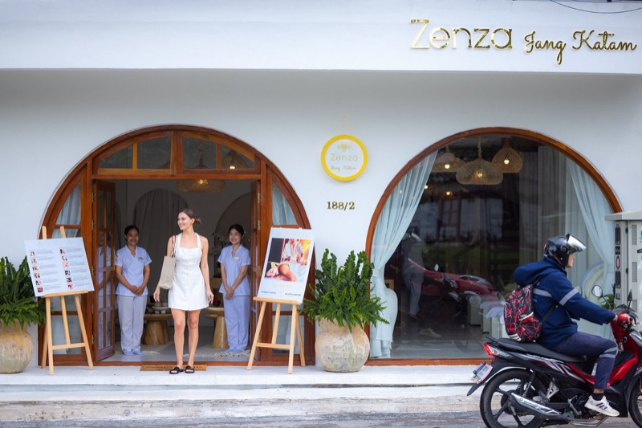
What to try: Nuad Thai Mind treatment. A polished mid-range spa in the Old City with attentive staff and a lovely ambience. More refined than the street-level shops without the boutique hotel markup. The receptionists are notably welcoming.
"I loved Zenza in the old town. Went for the Nuad Thai mind, not the oil one — but it was a lovely spot and the girls knew what they were doing. Receptionist is absolutely lovely as well."
— u/Disconando, r/chiangmai · 3 upvotes
tabiji verdict: The Goldilocks pick — not too basic, not too expensive. Clean and professional with genuinely skilled therapists. If you want a step above shopfront massage but aren't chasing the luxury spa experience, Zenza nails it. Great location for an Old City walking day.
💰 ฿350–1,200/treatment
📍 Multiple locations (Nimmanhaemin, Night Bazaar, malls)
💆 Thai, Oil, Foot, Herbal, Hot Stone
📌 Google Maps →
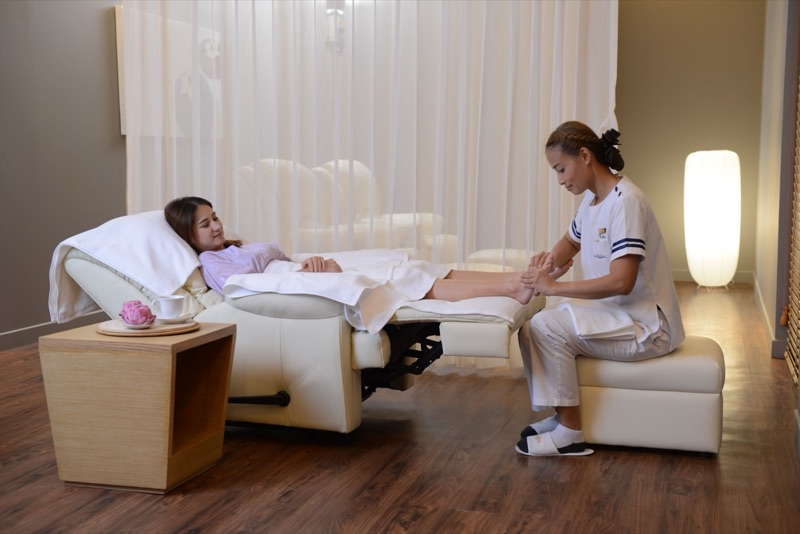
What to try: Thai massage or their signature herbal compress. Thailand's most trusted spa chain — consistent quality across all branches. Air-conditioned, clean, and you always know exactly what you're getting. They also offer packages with mango sticky rice afterward (seriously).
tabiji verdict: The "safe bet" of Thai massage. Not the cheapest, not the most atmospheric, but reliably good every single time. If you're nervous about your first Thai massage or just want zero surprises, Let's Relax delivers. The post-massage mango sticky rice is a nice touch. Multiple branches make it convenient no matter where you're staying.
💰 ฿180–250/hour
📍 Tha Phae Road, near Tha Phae Gate
💆 Thai (deep pressure), Oil
📌 Google Maps →
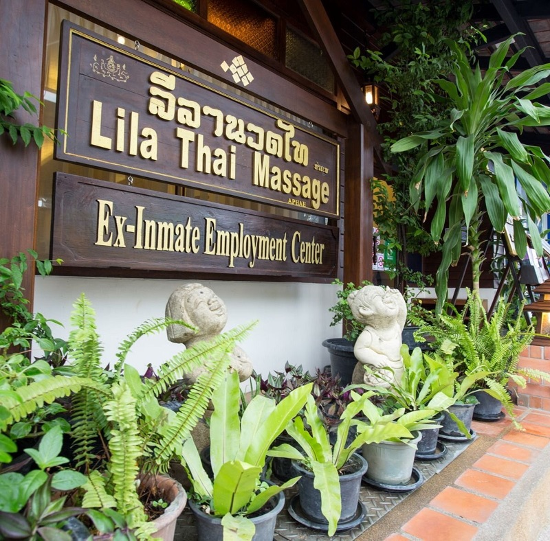
What to try: Traditional Thai massage — and request one of the stronger therapists if you like deep pressure. These are the no-name, no-Google-Maps street-corner setups with plastic chairs and floor mats. They look basic, but some of the most powerful massage therapists in Chiang Mai work here.
"These massage magicians aren't your typical spa ladies with soft hands and gentle smiles. Oh no, my friend. These are human tanks with muscles that could probably bench-press a tuk-tuk... By the end of the session, you're left feeling like a limp noodle, but in the best way possible. 10/10 would absolutely go back again. And the cherry on top: it's 180 BAHT for an HOUR. Please, tip them well."
— r/ThailandTourism · 86 upvotes
tabiji verdict: The raw, unfiltered Chiang Mai massage experience. No frills, no AC, no ambient spa music — just incredibly strong hands and genuine technique at prices that feel like theft. ฿180 for an hour? Tip generously. Not for the faint-hearted — these therapists go deep. Best after a full day of temple-hopping when your legs are screaming.
💰 ฿3,500–8,000+/treatment
📍 Mae Rim, ~30 min from Old City
💆 Thai, Lanna, Oil, Signature Treatments
📌 Google Maps →
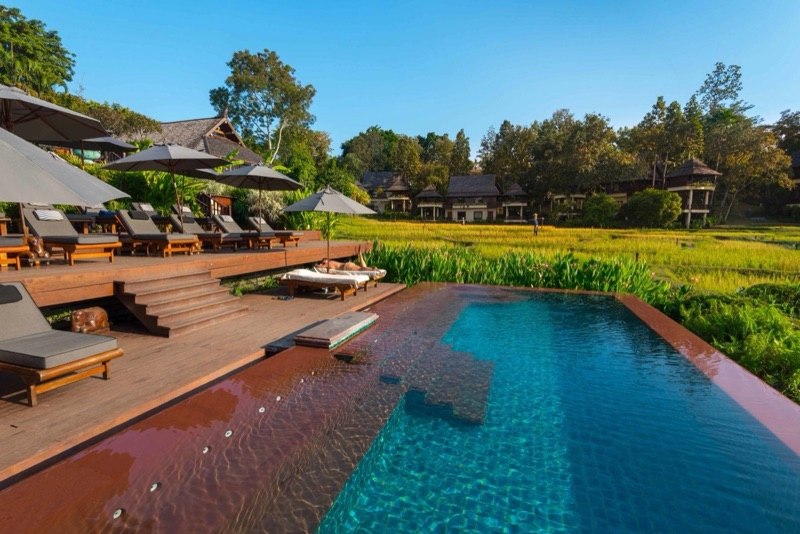
What to try: Their Lanna-inspired signature treatments in open-air pavilions overlooking rice paddies. This is the ultimate splurge — world-class spa facilities in a jaw-dropping setting. If money is no object and you want the most indulgent spa day in northern Thailand, this is it.
tabiji verdict: The "once in a lifetime" pick. At 10–20x the price of a street massage, it's pure luxury — but the setting (rice paddy pavilions, mountain backdrop) is genuinely special. Worth it for a honeymoon, anniversary, or if you simply want the best Thailand has to offer. Book well in advance.
💰 ฿800–2,500/treatment
📍 Hussadhisawee Road, Chiang Mai
💆 Thai, Oil, Aromatherapy, Packages
📌 Google Maps →
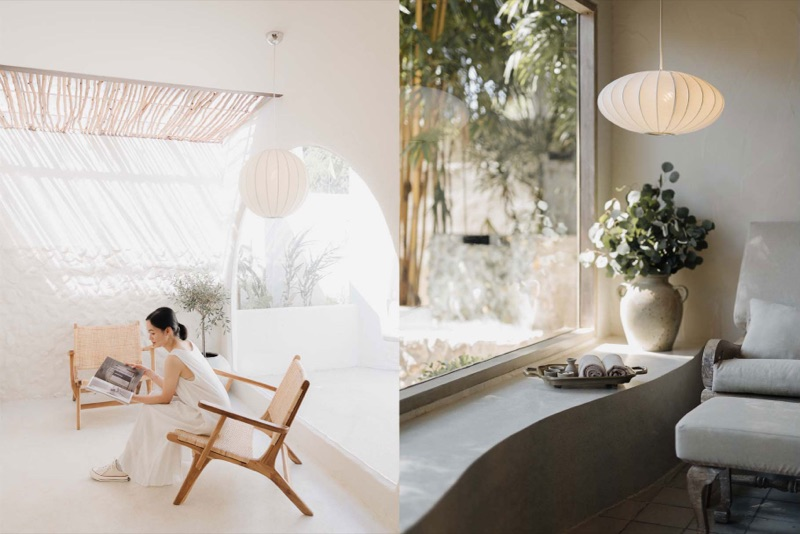
What to try: Their half-day spa package. A beautifully designed spa in a restored colonial-style building with lush gardens and private treatment rooms. Known for using locally sourced, natural products. The atmosphere alone is worth the visit — feels like stepping into a private retreat.
"Cheeva Spa is the one. Beautiful setting, great treatments, not as expensive as you'd think from the photos."
— r/chiangmai · Best Spa thread
tabiji verdict: Boutique luxury without the resort markup. The garden setting creates a genuine sense of escape right in the city. Perfect for couples or anyone who wants a spa experience that feels elevated without being absurdly expensive. One of the best value-for-ambience ratios in Chiang Mai.
💰 ฿700–2,000/treatment
📍 Multiple locations, Chiang Mai
💆 Thai, Oil, King & Queen Package, Herbal
📌 Google Maps →
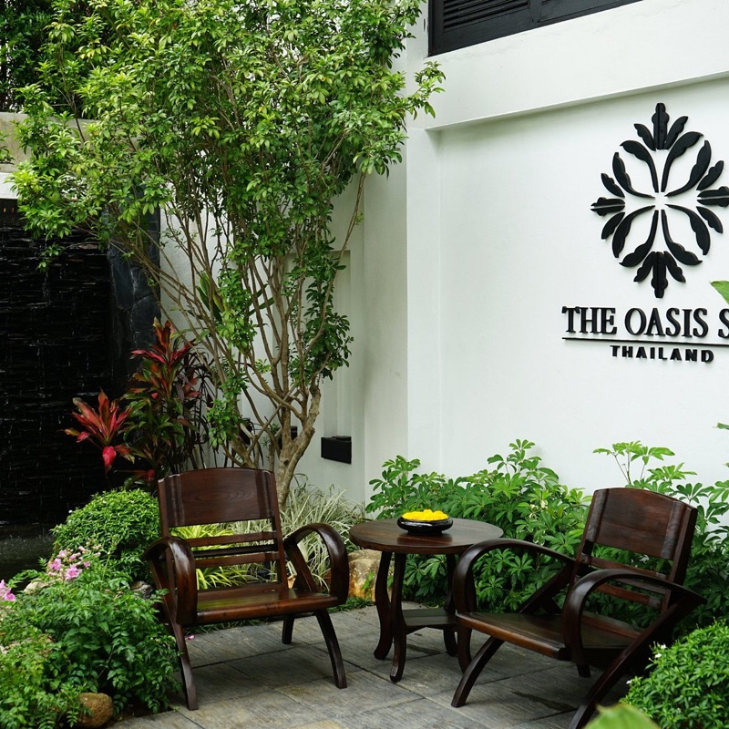
What to try: The "King of Oasis" signature treatment or couples package. A well-established Chiang Mai spa chain with beautiful Lanna-style buildings and gardens. Popular with both tourists and locals celebrating special occasions. Consistently high quality across all branches.
"Oasis Spa is lovely. Multiple locations, traditional Lanna buildings. More upscale than the street shops but still very reasonable by Western standards."
— r/chiangmai · Massage Recommendations thread
tabiji verdict: The reliable mid-luxury option. Beautiful settings, professional therapists, and prices that still feel like a bargain compared to what you'd pay at home. The couples packages are especially popular. A solid choice when you want to treat yourself but the Four Seasons feels like too much.
💰 ฿200–400/hour
📍 Old City, Chiang Mai
💆 Traditional Thai (Nuad Boran)
📌 Google Maps →
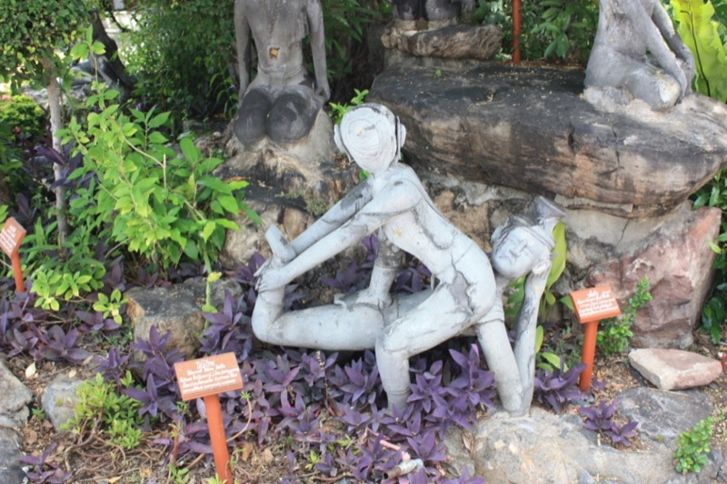
What to try: Traditional Thai massage (Nuad Boran). This is the Chiang Mai branch of the famous Wat Pho school in Bangkok — where Thai massage was formally codified. Therapists here are trained in the authentic, centuries-old technique. Also offers massage courses if you want to learn yourself.
"You should try the massage school at Wat Pho — where Thai massage originated."
— r/ThailandTourism · Legit massage thread
tabiji verdict: For purists who want massage from the lineage that literally invented it. The technique is textbook-authentic Nuad Boran — no shortcuts, no watered-down tourist version. Also a great place to take a multi-day massage course if you want to bring the skill home with you. The school's reputation adds gravitas.
💰 ฿300–500/session
📍 Old City, Chiang Mai
💆 Tok Sen, Nerve Touch, Traditional Lanna Healing
📌 Google Maps →
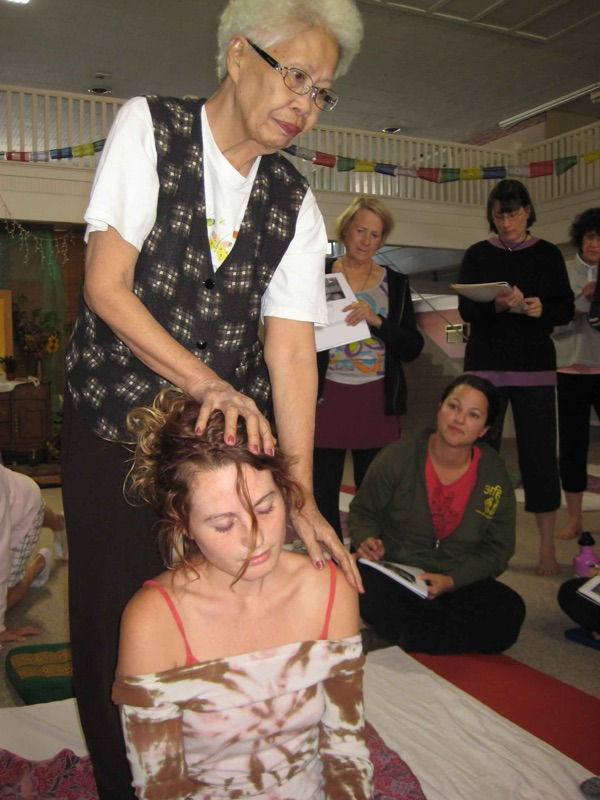
What to try: Tok Sen massage — a unique Lanna technique using a wooden mallet and wedge tapped rhythmically along your body's energy lines. Not available outside northern Thailand. Lek Chaiya specializes in traditional Lanna healing arts that predate modern Thai massage. An experience you genuinely can't get anywhere else.
"Tok Sen comes from the Lanna tradition in the north of Thailand. There may be other regional differences that I am not aware of."
— r/Thailand · Thai massage variations thread
tabiji verdict: The "only in Chiang Mai" experience. Tok Sen is genuinely unique to northern Thailand — you won't find it in Bangkok or the islands. The rhythmic tapping sound is meditative and the deep vibrations release tension in ways regular massage can't reach. If you want to go beyond standard Thai massage, this is where you go.
💰 ฿2,000–6,000/treatment
📍 Charoen Prathet Road, along the Ping River
💆 Thai, Oil, Hydrotherapy, Signature Packages
📌 Google Maps →
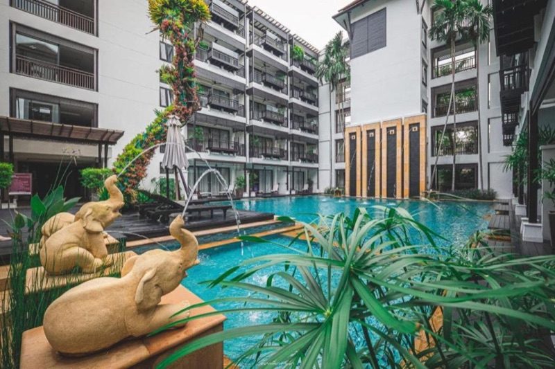
What to try: Their hydrotherapy circuit combined with a traditional Thai massage. RarinJinda is a boutique wellness resort right on the Ping River with one of the most awarded spas in northern Thailand. The riverside setting is stunning, and the hydrotherapy facilities (hot/cold pools, steam rooms) elevate the experience beyond a standard massage.
"RarinJinda if you want proper luxury. Right on the river, incredible spa facilities. Not cheap but worth every baht for a special occasion."
— r/chiangmai · Best Spa thread
tabiji verdict: The "luxury but still in the city" option. Unlike Four Seasons (which requires a 30-minute drive to Mae Rim), RarinJinda is right on the Ping River walkable from the Night Bazaar. The hydrotherapy circuit alone justifies the splurge. Perfect for a day when you want to feel like royalty without leaving town.
💰 ฿250–600/treatment
📍 Nimmanhaemin Road area
💆 Thai, Oil, Foot, Herbal Compress
📌 Google Maps →
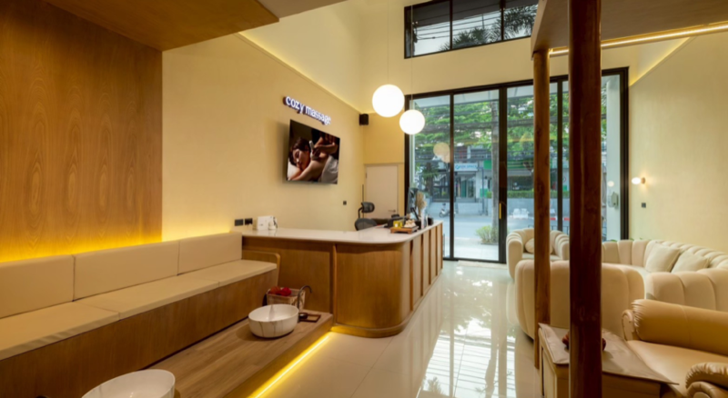
What to try: Thai massage or herbal compress after a day of café-hopping on Nimman. The go-to for digital nomads staying in the Nimmanhaemin area. Clean, air-conditioned, and competitively priced. Nothing fancy, but exactly what you need when you've been hunched over a laptop all day.
"There are decent massage places all over Nimman. Just pick one that looks clean, check Google reviews, and you'll be fine. The competition keeps quality up."
— r/digitalnomad · Chiang Mai digital nomad thread
tabiji verdict: The digital nomad's default. Nimmanhaemin is packed with massage shops competing for the laptop crowd, which means quality stays high and prices stay reasonable. Walk down any Nimman soi, pick a place with good Google reviews, and you'll do fine. No need to overthink it.
💰 ฿200–350/hour
📍 Wualai Road, Old City
💆 Traditional Northern-Style Thai Massage
📌 Google Maps →
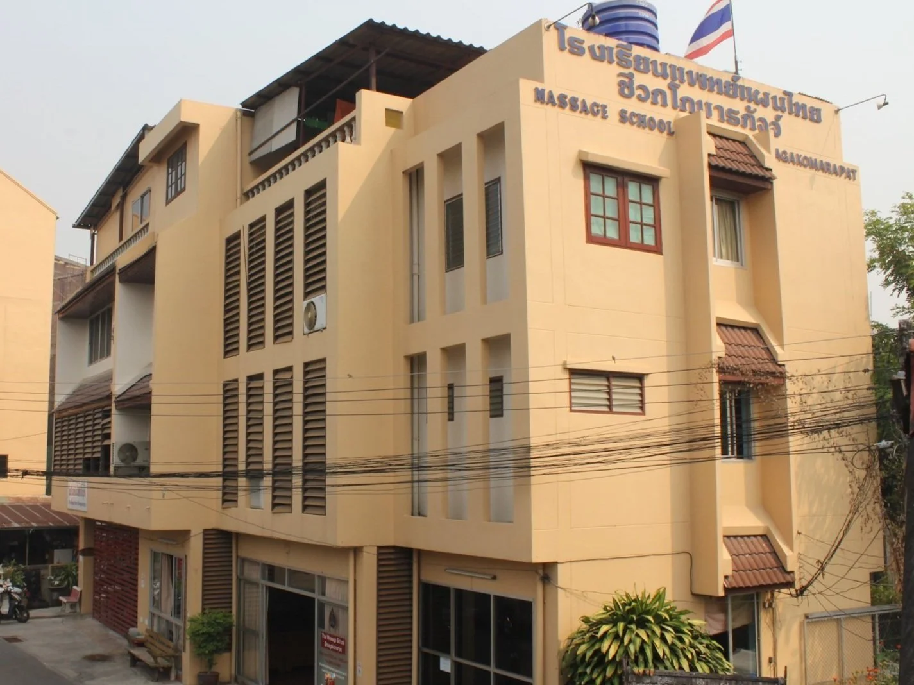
What to try: Traditional northern-style Thai massage. One of the oldest massage schools in Chiang Mai, the Old Medicine Hospital teaches and practices a northern Thai style that's distinct from the Bangkok/Wat Pho tradition — slower, more rhythmic, and deeply meditative. You're getting massaged by trained practitioners who take the art seriously.
"The Old Medicine Hospital is the real deal. Northern-style Thai massage — different from what you get in Bangkok. It's a school so the technique is proper and traditional."
— r/chiangmai · Massage Recommendations thread
tabiji verdict: The history nerd's pick. This school predates the tourist boom and teaches the original Chiang Mai style of massage that's been passed down through generations. The technique feels noticeably different from standard Thai massage — slower, more deliberate, almost meditative. Also offers courses ranging from 1 day to multiple weeks.
Frequently Asked Questions
How much does a Thai massage cost in Chiang Mai?
A traditional Thai massage ranges from ฿180–300/hour at street-level shops to ฿500–800 at mid-range spas and ฿1,500–5,000+ at luxury resort spas. Chiang Mai is significantly cheaper than Bangkok — you can get an excellent one-hour massage for under ฿300 at many well-regarded shops in the Old City.
What is Tok Sen massage and where can I try it?
Tok Sen is a traditional Lanna (Northern Thai) massage technique using a wooden mallet and wedge tapped along the body's energy lines. It's unique to the Chiang Mai region and genuinely unavailable in Bangkok or the islands. Try it at Lek Chaiya, Fah Lanna, or specialized Lanna healing shops in the Old City.
Should I tip my massage therapist?
Tipping isn't mandatory but is very appreciated. Standard is ฿50–100 for a one-hour massage at budget shops, ฿100–200 at mid-range spas, and 10–15% at luxury places. Therapists at social enterprise shops like Lila Thai especially benefit from tips — your generosity makes a real difference.
Do I need to book in advance?
Most neighborhood shops accept walk-ins — there's a massage place on practically every street. However, popular spots like Lila Thai and the Women's Prison program fill up during high season (November–February). Luxury spas like Four Seasons and RarinJinda should always be booked ahead. For the best therapists, regulars recommend requesting by name.
What's the difference between Thai massage and oil massage?
Traditional Thai massage (Nuad Thai) is done fully clothed on a floor mat with stretching, acupressure, and yoga-like positions — it's more intense and therapeutic. Oil massage uses a table with aromatic oils and long flowing strokes — more relaxing and gentle. Most Redditors say: try traditional Thai first, since you can get oil massages anywhere in the world, but authentic Nuad Thai is best experienced in Thailand.